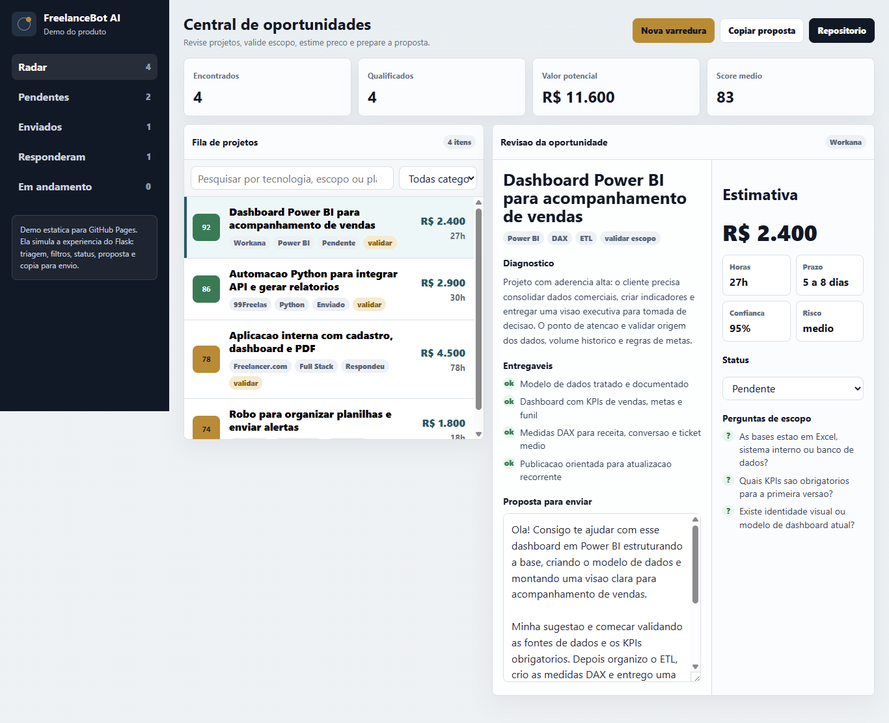

Fila priorizada, KPIs, filtros e revisao lado a lado.
Produto demonstravel para portfolio
Radar de oportunidades que vira proposta comercial.
FreelanceBot AI simula um fluxo real de prospeccao: encontra projetos, prioriza aderencia, estima preco e prazo, levanta riscos e deixa a proposta pronta para revisao humana.
Triagemscore, plataforma e categoria
Pricinghoras, faixa e confianca
Propostatexto editavel para envio
